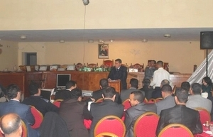
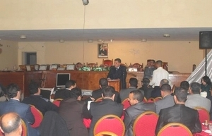

أنشطة المحكمة
 

حفل توديع وتكريم للقضاة للمنتقلين والموظفين المتقاعدين
أقام قضاة المحكمة الابتدائية بالصويرة وأطر كتابة الضبط بها، بتاريخ 21 فبراير 2014، بقاعة الجلسات رقم 1، في إطار السنة المحمودة والمثواثرة للمحكمتنا الحبيبة، حفل لتوديع القضاة المنتلقين منها إلى محاكم أخرى، ولتكريم الموظفين المتقاعدين بها، وقد ترأس هذا الحفل السيد رئيس المحكمة الابتدائية بالصويرة أحمد خولصي، والسيد وكيل الملك بها السيد عمر الصوفي، وتميز هذا الحفل، بحضور مكثف لقضاة المحكمة الابتدائية بالصويرة، وأطر كتابة الضبط بها، وبمشاركة فعالة من السادة المحامون والعدول والمفوضين القضائين.
وتم خلال هذا الحفل البهيج إلقاء كلمات إثراء وثناء في حق القضاة وأطر كتابة الضبط المحتفى بهم، من طرف مختلف الأطياف المشاركة فيه. كما أنه تم توزيع هدايا وشواهد تقديرية على القضاة وأطرة كتابة الضبط المحتفى بهم، وذلك من باب العرفان والامتنان لما بذله من جهوده أثناء مسيرتهم المهنية داخل المحكمة الابتدائية بالصويرة.كما أنه تم توزيع هدايا وشواهد تقديرية على القضاة وأطرة كتابة الضبط المحتفى بهم، وذلك من باب العرفان والامتنان لما بذله من جهوده أثناء مسيرتهم المهنية داخل المحكمة الابتدائية بالصويرة. وفي الأخير، تم توزيع ورود على السادة القضاة وأطرة كتابة الضبط الجدد، بمناسبة تعيينهم في المحكمة الابتدائية بالصويرة.
Last updated 3 mins ago
حفل توديع السيد رئيس المحكمة والسيد وكيل الملك
شهد المقر الجديد للمحكمة الابتدائية بالصويرة، حفل توديع السيد رئيس المحكمة أحمد الخولصي، والسيد وكيل الملك عمر الصوفي، وذلك بمناسبة تعينهما من طرف صاحب جلالة الملك أعزه الله ونصره، الأول رئيسا أول لمحكمة الإستئناف بخريبكة، والثاني وكيلا للملك بالمحكمة الابتدائية بأسفي.
وعرف هذا الحفل، حضور السيد رئيس المحكمة الابتدائية للصويرة الجديد الدكتور عادل حاميدي، بالإضافة إلى الحضور المكثف للسادة قضاة المحكمة الابتدائية بالصويرة، وأطر كتابة الضبط بها، وبمشاركة فعالا لسادة المحامون والعدول والمفوضين القضائين. وتم خلال هذا الحفل البهيج إلقاء كلمات إثراء وثناء وشكر في حق السيدان رئيس المحكمة الابتدائية بالصويرة الأستاذ أحمد خولصى ووكيل الملك بها الأستاذ عمر الصوفي المحتفى بهما، لما قاما بهما من جهود أثناء فترة إشرافها على جهازي النيابة العامة والرئاسة بمحكمتنا العزيزة، من طرف مختلف الأطياف المشاركة فيه. وتم خلال هذا الحفل، إلقاء كلمتين مؤثرتين للسيدان رئيس المحكمة الابتدائية بالصويرة الأستاذ أحمد خولصي ووكيل الملك بها الأستاذ عمر الصوفي، حيث شكرا من خلال لهما جميع الساة القضاة وأطر كتابة الضبط، ومساعدي القضاء، على روح التعاون التي كانت سائدة خلال فترة عملهما بالمحكمة، وتمنيا التوفيق والسداد لخليفتهما السيدان الدكتور عادل حاميدي رئيس المحكمة، والأستاذ سعيد موفنين وكيل الملك في مهامهما الجديدة. وفي الأخير، تم توزيع هدايا تذكارية للسيدان رئيس المحكمة الابتدائية بالصويرة الأستاذ أحمد خولصي ووكيل الملك بها الأستاذ عمر الصوفي المحتفى بهم.
Last updated 3 mins ago
حفل تنصيب السيد رئيس المحكمة والسيد وكيل الملك
بتاريخ 17 جمادى الأولى 1435 الموافق ل 19 مارس 2014 على الساعة 11 صباحا انعقدت بقاعة الجلسات رقم 01 بهذه المحكمة جلسة رسمية لتنصيب السيدين عادل حاميدي رئيس المحكمة بها وسعيد موفنين وكيل الملك لديها برئاسة السيد سعيد شمام وبعضوية جميع أعضاء الهيئة القضائية، وحضور السيد: سعيد دهابي نائب وكيل الملك لدى هذه المحكمة، وجميع أعضاء هيئة النيابة العامة لديها، وبمساعدة السيد محمد الوكاري رئيس مصلحة كتابة الضبط. وحضر هذه الجلسة الرسمية السيد الرئيس الأول لمحكمة الاستئناف بآسفي والوكيل العام للملك لديها، المسؤولون القضائيون بدائرة محكمة الاستئناف بآسفي، والقضاة و الموظفون ونقيب هيئة المحامين بآسفي وأعضاء من مكتب هذه الهيئة، وعامل صاحب الجلالة على إقليم الصويرة ورئيس المجلس العلمي المحلي بالصويرة، وممثل المجلس الجهوي لعدول استئنافية أسفي، ورئيس المجلس الجهوي لهيئة المفوضين القضائيين بآسفي، ورئيس المجلس البلدي بالصويرة، وقائد الدرك الملكي، وضباط الشرطة، إضافة إلى جمع من المدعوين. وتم في هذه الجلسة الرسمية، وبناء على كتاب السيد وزير العدل والحريات الصادرة بتاريخ 18 ربيع الثاني 1435 الموافق ل 18 فبراير 2014 تحت رقم 3256/5/ كتابة المجلس الأعلى للقضاء، الذي بمقتضاه صدر الأمر المطاع عن الجناب الشريف أسماه الله وأعز أمره بتعيين في السيد عادل حاميدي رئيسا للمحكمة الابتدائية بالصويرة وكتاب السيد وزير العدل والحريات الصادرة بتاريخ 18 ربيع الثاني 1435 الموافق ل 18 فبراير 2014 تحت رقم 3255/5/ كتابة المجلس الأعلى للقضاء، الذي بمقتضاه صدر الأمر المطاع عن الجناب الشريف أسماه الله وأعز أمره بتعيين في السيد سعيد موفنين وكيلا للملك لدى المحكمة الابتدائية بالصويرة والذي تلي بالجلسة العمومية، بالتصريح بأن السيدين عادل حاميدي وسعيد موفنين قد نصبا في منصبهما يومه الأربعاء 17 جمادى الأولى 1435 الموافق ل 19 مارس 2014 على الساعة الحادية عشر والنصف صباحا بقاعة الجلسات العمومية الأول رئيسا للمحكمة الابتدائية بالصويرة والثاني وكيلا للملك لديها ونطلب منهما أن يلتحقا بمكانهما. وبعد التحاقهما بمكانيهما، تناول السيد رئيس المحكمة الجديد الكلمة، التي شكر من خلالها الحاضرين على المشاركة في هذه الجلسة الرسمية. وأعرب عن اعتزازة وفخره لما حظي به من ثقة مولوية غالية لصاحب الجلالة محمد السادس نصره الله، فضلا احساسه بجسامة المسؤولية الملقاة على عاتقه، و ما تتطلبه من دراية قانونية فذة ومواكبة للمستجدات العلمية والفقهية التي تزخر بها الساحة الفكرية و القانونية وإلمام بعلوم الإدارة الحديثة، فضلا على وجوب التحلي برحابة الصدر، مع الالتزام بروح الجدية والحزم والنزاهة والاستقامة ضمانا لحريات وحقوق رعايا صاحب الجلالة المنصور بالله، وإعلاء لكلمة العدالة وتحقيقا للمساواة بين المواطنين في إطار تفعيل القضاء في خدمة المواطن الذي يعتبر أحد ركائز الإصلاح الشامل والعميق للقضاء، الذي دعا إليه جلالة الملك والذي تتمثل مضامينه في الرفع من النجاعة القضائية وترسيخ التخليق لتوليد الثقة والمصداقية في قضاء فعال و منصف باعتباره حصنا منيعا لدولة الحق و عمادا للأمن القضائي و الاجتماعي و الاقتصادي كونه محفزا للتنمية ومشجعا للاستثمار، موضحا أنه عازم وبإرادة قوية و بعون من الله وبهمة قضاة المحكمة الشباب وتوجيهات شيوخنا الأفاضل المسؤولين القضائيين بمحكمة الاستئناف على القيام بمهامه بحزم وأمانة لأكون عند حسن ظن عاهل البلاد الذي اسند إليه هذه المأمورية الجديدة، وذلك من خلال رصد وتشخيص كافة المشاكل المرتبطة بالعمل داخل هذه المؤسسة، واقتراح الحلول المناسبة ووضع جدول زمني لمعالجتها بمشيئة الله وعونه مستعينا بعلوم الإدارة الحديثة سيما الإدارة بالأهداف، ومع إعطاء الأولوية لتحديث الإدارة القضائية حوسبة وشباكا الكترونيا مع الاهتمام بالتبليغ والتنفيذ لإيماني العميق بأهميتها في تحقيق النجاعة القضائية وتقليص أمد التقاضي بقصد إرجاع الثقة إلى القضاء و السهر لهذه الغاية على حسن سير مهنة المفوض القضائي وفق الضوابط و النصوص الجاري بها العمل، و العمل على توطيد العلاقة المهنية واستثمارها بين هذه المحكمة ونقابة هيئة المحامين لدى محكمة الاستئناف بأسفي بهدف تفعيل العمل القانوني المشترك المثمر، و العمل على الاستمرار في التواصل مع جميع العاملين في المحيط القضائي بهذه الدائرة إدارة ترابية و مصالح خارجية و عدولا و مفوضين قضائيين ومساعدين اجتماعين، كما لا يفوت بهذه المناسبة أن ينوه بسلفه الرئيس السابق لهذه المؤسسة فضيلة الأستاذ أحمد خولصى الرجل القدوة علما و خلقا و الذي ترك بصمات جلية ظاهرة موسومة بالجدية و الاستقامة و الحزم و حسن الإدارة القضائية، فرشح لمهام أعلى نتمنى له التوفيق فيها، متمنيا للأستاذ الفاضل السيد وكيل الملك الجديد وهو قامة قضائية شامخة نعتز بالعمل إلى جانبها التوفيق في مهامه الجديدة بهذه المدينة العامرة، وفي الأخير اسأل الله عز وجل أن يلهمه السداد والرشاد في جميع أعماله ومهامه، وأن يجعله على التوجه السليم والنهج القويم ويوفقنا لما يعود على وطننا بالخير العميم. ثم أعطى الكلمة للسيد وكيل الملك، والتي عبرها فيها عن اعتزازه بالثقة المولوية التي حظيت بها، مع إحساسه بمدى جسامة هذه المسؤولية الملقاة على عاتقه، ليكون عند حسن ظن صاحب الجلالة، ومع إعراب عازمه في هذا المجال على استثمار تجربته المتواضعة في ميدان القضاء، بعد ان قضي كوكيل للملك لفترة غير يسيرة بالمحكمة الابتدائية بكلميم لمدة قاربت ثمان سنوات وبابتدائية سيدي بنور لمدة ناهزت الثلاث كللت كلها ولله الحمد بالنجاح، وذلك من أجل إحقاق الحق وإقامة العدل، معبرا أن أكبر رهان وتحدي يتعين مواجهته بعدما ارتقى الدستور الجديد للمملكة بالقضاء إلى سلطة إلى جانب السلطتين التشريعية والتنفيذية، يتمثل في استرجاع ثقة المواطن في القضاء والعدالة التي لن تتحقق إلا بجعل هذا المواطن يلمس في أحكام المحاكم الإنصاف وروح العدل، وعبر السبد وكيل الملك عن أنه عاقد العزم على تفعيل التوجيهات الملكية السامية بكل أمانة دون إغفال مجال التخليق في ظل الاحترام التام لمبدأ استقلال القضاء وعدم المساس بقناعة القضاة، علما بان التخليق لا يعني فقط قضاة وموظفي المحاكم بقدر ما ينصرف إلى تخليق باقي مختلف المهن القانونية والقضائية، وذلك من أجل جعل النيابة العامة تقوم بدورها الفاعل والفعال في تخليق الحياة العامة والسهر على توفير وضمان شروط المحاكمة العادلة، واتخاذ كل ما من شأنه حماية حرية الأفراد والجماعات وحقوقهم، ولي الثقة الكاملة في القضاة الشرفاء بهذه المحكمة للبث في القضايا بكل تجرد وحياد ونزاهة مادية وفكرية وفق قناعاتهم الوجدانية التي يستلهمونها من ضمائرهم النقية وتقديرهم لجسامة الأمانة الملقاة على عاتقهم، هذا من نهج سياسة الباب المفتوح سيرا على خطى سلفي للاستماع إلى تظلمات وشكايات المتقاضين واتخاذ التدابير اللازمة لمعالجتها قانونا في أقصى الآجال، مع تواصل مع مختلف فعاليات المجتمع المدني في حدود ما يسمح به القانون اعتبارا لما في ذلك من دور هام في توعية مختلف مكونات المجتمع، كما شكر سلفه السيد وكيل الملك الأستاذ عمر الصوفي قد مهد إلي الطريق بعد أن قام بمجهودات كبيرة لتأسيس عمل هذه المؤسسة قلبا وقالبا والذي استطاع بفضل حنكته وتبصره إدارة شؤون العدل بهذه المحكمة لمدة قاربت 15 سنة وفق حكامة جيدة وبرزانة وحسن تذبير، ودعى الله أن يوفقه في مهامه الجديدة كوكيل للملك لدى المحكمة الابتدائية بآسف، وشكر في الأخير، الجميع على الحضور. وجدد السيد الرئيس خالص تشكراته ووافر امتنانه لجميع السيدات والسادة الأفاضل لحضورهم هذه الجلسة ووجه شكره لكل من سهر على إقامة هذه الجلسة الرسمية، وبعدها تم رفع الجلسة.
Last updated 3 mins ago
مشروع قانون المسطرة المدنية الجديد
تستعد المحكمة الابتدائية بالصويرة في إطار نشاطها العلمي النصف سنوي، وفي إطار جعلها سنة متبعة، لتنظيم ندوة حول موضوع مشروع قانون المسطرة المدنية الجديد، وذلك في غضون الأيام القليلة القادمة، إن شاء الله، والذي ستعرف مشاركة ثلة من القامات القضائية والجامعية السامقة، من مختلف جهات بلدنا الحبيب، ومن مختلف المشارب العلمية.والحقيقة، أن دراسة موضوع مشروع قانون المسطرة المدنية، سوف تمكننا من إجراء مقارنة بين قانون المسطرة المدنية المطبق ومشروع قانون المسطرة المدنية، للوقوف على القيمة المضافة التي يحملها مشروع القانون المذكور والقصور الذي يعتري صياغته. وتكمن أهمية هذه الندوة في أنها فرصة للوقوف على مدى قدرة مشروع قانون المسطرة المدنية الجديد، على الاستجابة لتطورات العصر، والتي تفرض التخلى عن الضوابط والآليات الإجرائية التقليدية، والاعتماد على الآليات الحديثة، مع صياغة قواعد قانونية مرنة قادرة على تنزيل فكرة النجاعة القضائية على أرض الواقع، وهي أرضية للنقاش الصريح والبناء والغاية السامية المرادة إخراج قانون مسطرة مدنية يستجيب لطموحات المهنيين، وهم طبقة منفذي القانون وكذا الفقه، ويلقاه الناس بقبول حسن. يتلافى نواقص القانون الإجرائي الساري ويحقق النجاعة الإجرائية المطلوبة. لذلك، نوجه الدعوة للجميع، قضاة ومساعدي القضاء وجامعيين، قصد سبر أغوار مشروع قانون المسطرة المدنية والإسهام في نجاح هذه الندوة بمشاركاتهم الفعالة وحضورهم المكثف. والله ولي التوفيق.